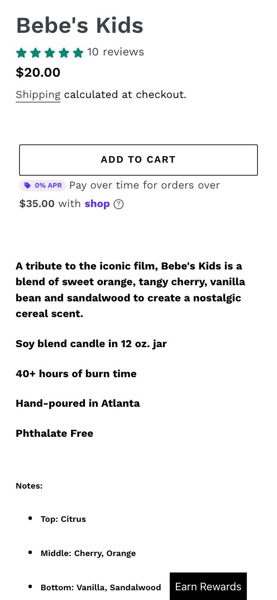
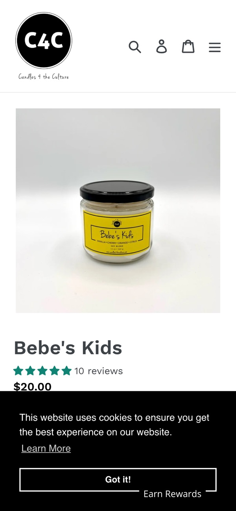
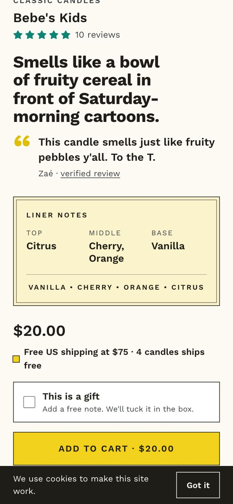
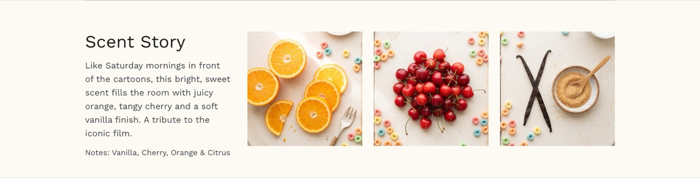
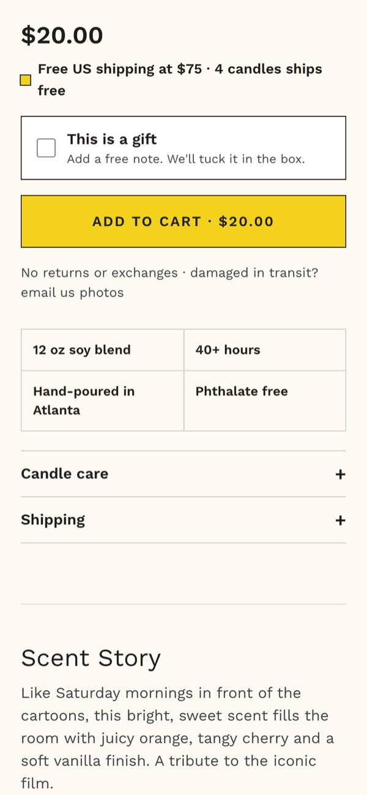
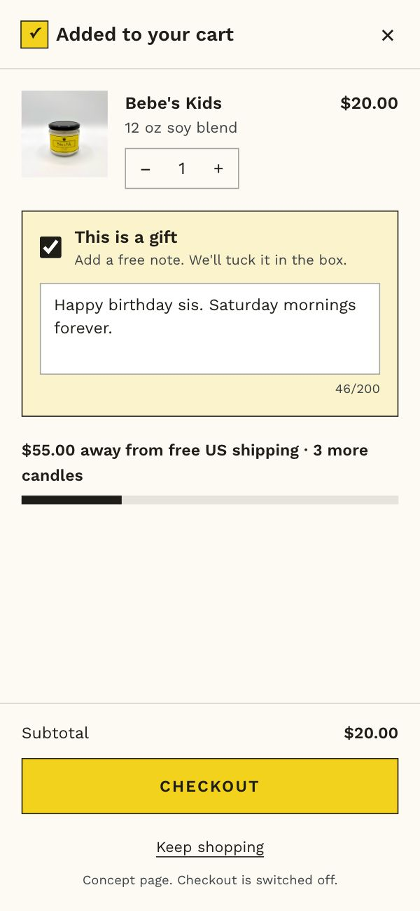
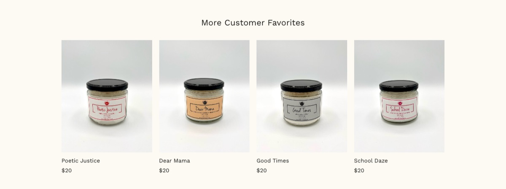
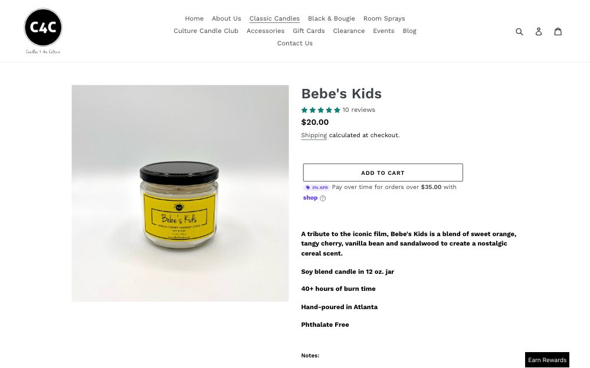
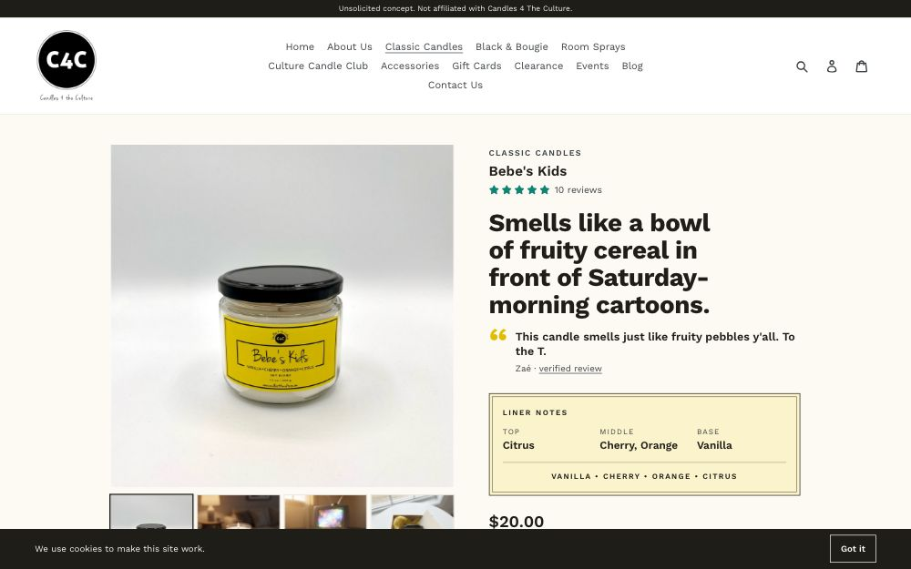
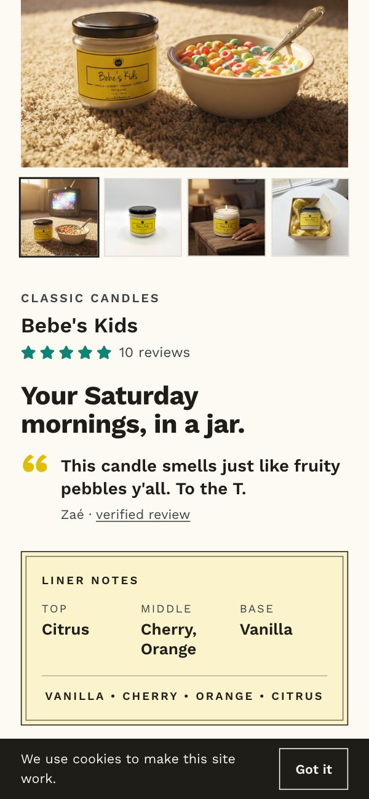

Candles 4 The Culture: a cereal candle that never says which cereal
Unsolicited concept. Not affiliated with Candles 4 The Culture. Self-initiated, no client.
- Candles 4 The Culture hand-pours culture-inspired candles in Atlanta. Its Bebe's Kids candle sells a "nostalgic cereal scent", and the customers are the ones who say what it smells like.
- I audited the product page, ranked three hypotheses with ICE, rebuilt the page around them and wrote the test plan before anything ran.
- Not run. I have no access to the brand's traffic, so there is no result to report.
- Live before and after pages are below, plus a landing variant for an ad aimed at 90s kids.
Situation
Bebe's Kids is a $20, 12 oz candle. The page describes it as "a blend of sweet orange, tangy cherry, vanilla bean and sandalwood to create a nostalgic cereal scent", with "40+ hours of burn time" and "Hand-poured in Atlanta". It has 10 reviews, all 5 stars, and one studio photo.
The page runs on Shopify's free Debut theme with almost no changes. I cloned it (27 Nov 2026) into a Next.js build and redesigned a copy, so both pages below run on the same code. Page speed was not measured: the PageSpeed API was rate-limited on the day.
What I found
Sources: the live page and its HTML, 103 reviews from the brand's Judge.me widget, and three competitor candle pages.
1. "Nostalgic cereal scent", while reviewers name the cereal
7 of the 10 Bebe's Kids reviews compare it to a cereal, and the page never names one. The concrete version sits in review number five, far below the fold:
"This candle smells just like fruity pebbles y'all. To the T."Zaé, Judge.me review, 04/05/2021
The whole description is set in bold and the scent notes are <h6> tags in a bullet list, so the story, the specs and the notes all read at the same level.


2. No way to send it as a gift
13 of the brand's reviews mention buying a candle as a gift (birthdays, mom, sister, Christmas). There is no gift note or gift option before checkout. Add to Cart jumps straight to the full cart page with no confirmation, and the only place to write anything is a blank "Add a note to your order" box. Homesick, one of the competitors I checked, sells a gift box right at its buy box.
3. A weak button, and a cookie wall on mobile
ADD TO CART is a white outline button, the weakest element in the buy box. On a phone, the cookie banner (rendered twice) covers the screen right under the price, and the "Earn Rewards" launcher sits on top of its "Got it!" button.


4. Free shipping at $75 is hidden
The shipping policy says "Free shipping for U.S. orders $75 and up." The product page says only "Shipping calculated at checkout." At $20 a candle, four candles ship free, which is a gift bundle nobody is told about. The slot under the button goes to a Shop Pay line for orders over $35 that doesn't apply to a $20 item.
5. The notes say sandalwood, the jar doesn't
The copy and the base note list sandalwood. The jar label reads "VANILLA • CHERRY • ORANGE • CITRUS". The redesign follows the jar and leaves sandalwood out. The brand would need to confirm which one is right.
6. Found, but out of scope: the reviews
Judge.me marks some reviews "Review earned a reward for future purchase", but the theme's CSS hides that label. Love-spell spam is published as 5-star reviews on two other product pages. Both are trust problems the brand should fix. I left the review module unchanged because the brief was the scent and gifting.
Before and after
Both pages are static exports of the same build, so you can scroll and click around them. Add to Cart in the redesign opens a working cart drawer. Checkout is switched off. The redesign keeps the brand's yellow, black and type, and leaves the reviews as they are.
The lifestyle photos in the redesign's gallery are concept imagery, made for this study.
The scent, in words H1


Scent story H1


Gift note and cart drawer H2 H3




More customer favorites H3


Desktop, first screen




Fixed without a test
- One compact cookie banner instead of two, clear of the buttons.
- Description at regular weight in the Scent Story section, plus a specs row in the buy box: 12 oz soy blend, 40+ hours, hand-poured in Atlanta, phthalate free.
- The no-returns policy stated next to the button, with the damaged-in-transit fallback.
- Gallery slots for a lit candle, a mood shot and a gift-ready box. Reviews moved inside the page margin.
Ad to page: 90s kids and Saturday mornings
The audience is adults who grew up on Saturday-morning cartoons and fruity cereal. 7 of 10 Bebe's Kids reviews name the cereal, and 12 reviews across the brand react to its references and the memories they bring back.
"my sister got it for me for my birthday and we loved it so much. reminds me of cereals and saturday morning cartoons."PA Scott, Judge.me review, Bebe's Kids
So the hook is "Your Saturday mornings, in a jar." The landing variant changes the top of the page only: the mood photo leads the gallery and the hook replaces the scent line. Everything else matches the base redesign, so an ad split tests the message alone. I'd judge it on cost per add-to-cart against the base redesign, same ad.


Two angles I rejected
- The easy gift: 13 gift reviews, but any candle brand can say it, and the gift note already serves that buyer.
- Culture fans: a strong brand story, but only one review gives it as a reason to buy, so it fits a brand ad better than a product-page ad.
Hypotheses
Three carried forward. Each is its own block on the page, so they can be tested one at a time.
H1Say what it smells like
Leading the buy box with a one-line scent promise, a customer quote and liner notes from the jar label will raise add-to-cart rate.
H2A gift path
A free "This is a gift" checkbox with a note at the buy box, plus a cart drawer that keeps the note in view, will raise the share of orders with a gift note without lowering add-to-cart rate.
H3Show the $75 free shipping
Replacing the Shop Pay line with "Free US shipping at $75 · 4 candles ships free", next to a solid button, will raise the share of orders at $75 or more.
How I ranked them
Each scored 1 to 10 on Impact, Confidence (how many reviews and competitors back it) and Ease (a product-page change only). The score is the plain average.
| ID | Hypothesis | Primary metric | I | C | E | Score |
|---|---|---|---|---|---|---|
| H1 | Scent promise, customer quote, liner notes | Add-to-cart rate | 7 | 7 | 9 | 7.7 |
| H3 | $75 free-shipping line, solid button | Share of orders ≥ $75 (AOV) | 6 | 6 | 9 | 7.0 |
| H2 | Gift checkbox and note, cart drawer | Share of orders with a gift note | 7 | 6 | 6 | 6.3 |
Result
Not run. No traffic access.
The plan, written before anything goes live. Each test runs 50/50 by visitor on this product page, with a fixed horizon and no peeking. Baselines are my assumptions, not the brand's numbers. H2 and H3 count orders, so I turned orders into visitors with an assumed 2% visitor-to-order rate. Two-proportion z-test, α 0.05, power 0.8.
| Test | Primary metric | Assumed baseline → target | Visitors per arm |
|---|---|---|---|
| H1 | Add-to-cart rate | 7.0% → 8.05% (+15%) | 9,907 |
| H2 | Orders with a gift note (guardrail: add-to-cart rate) | 5% → 10% (+100%) | 21,750 |
| H3 | Orders ≥ $75 | 15% → 18.75% (+25%) | 78,250 |
weeks = visitors needed ÷ weekly PDP sessions
Each test stops once both arms reach their number and at least two full weeks have run. H2 doesn't ship if add-to-cart rate drops 5% or more. If a test would take more than 8 weeks, I wouldn't start it, and on one product page H3 probably would.
Unsolicited concept. Not affiliated with Candles 4 The Culture. Product photos and review quotes belong to their owners and are shown only to illustrate the redesign. Back to the portfolio